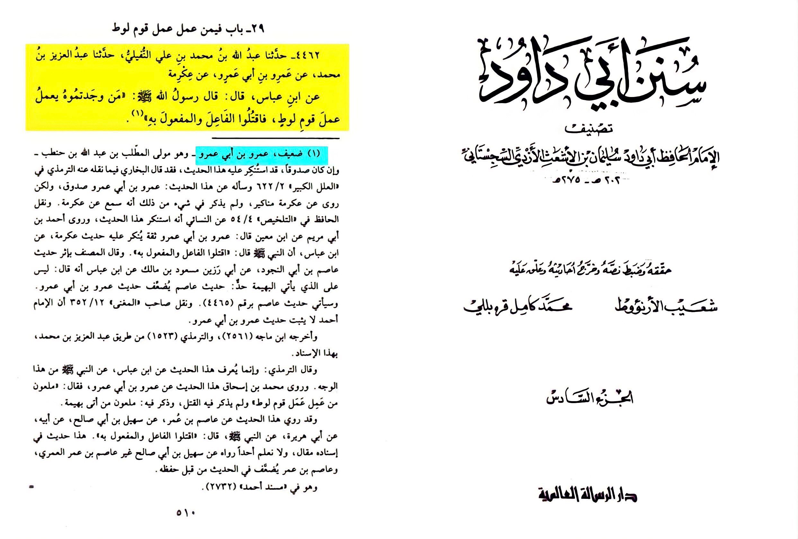
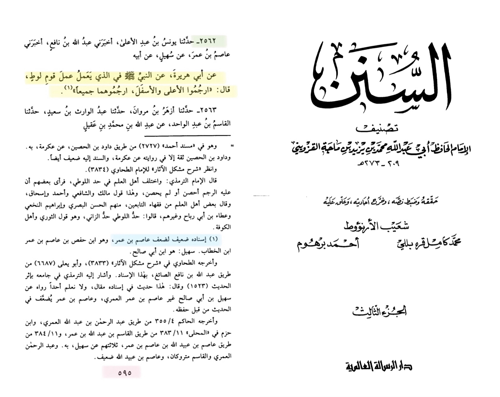
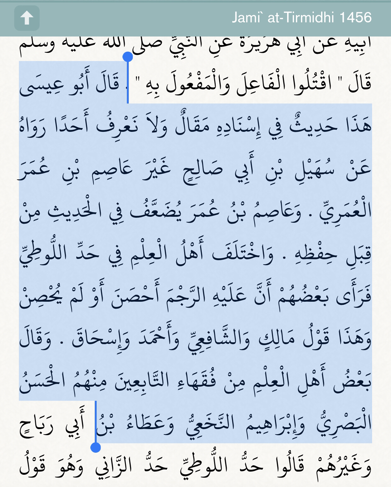
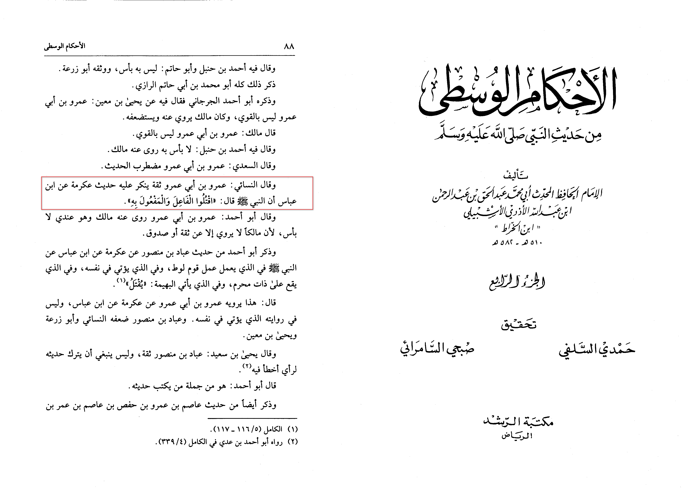
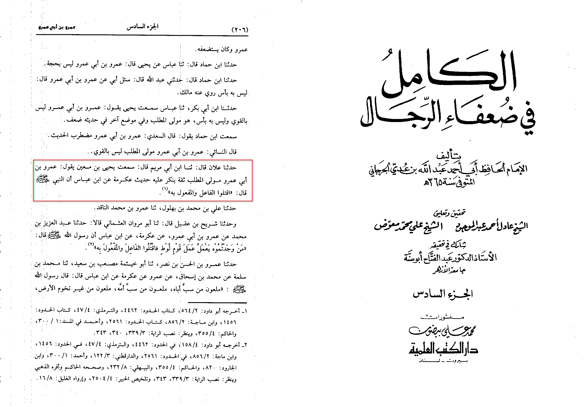
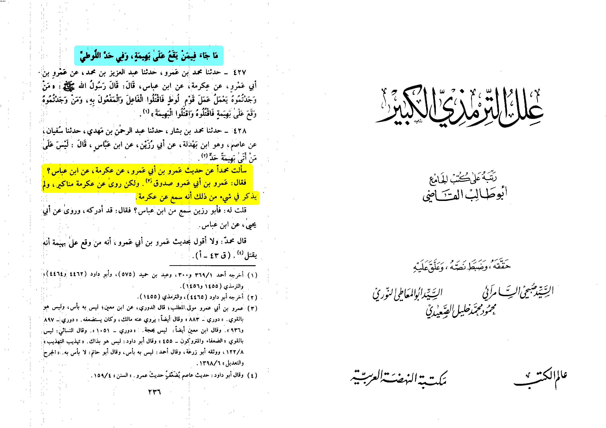

Ok so first I am gonna be taking the hanafi point view that is same law as a fornicator check
『⚖』ruling-on-adultress for more how do we deal with the hadith ?
In tahquiq Sunan Abi dawud volume 6 print of al-risala al-alameyah page number 510 narration number 4462
lets check footnote number 1 the revisor al-arna’ut weakns the repot because amr bin abi Amr who report
from ikrimah while he is truthful his narrations from ikrimah are criticized

the second report is found in tirmidhi and ibn majah while al-arna’ut weakned it because of asim bin omar
who is da’if
(weak narrator) in the chain


imam an-nasa'i rejected this hadith (Al-Ahkam Al-Wusta 4/88)

imam Yehia Ibn ma'in also rejected this hadith (Al-Kamal Fi Du'afaa Al-Rijal 6/206)

Al-Bukhari said he narrates manakir (rejected narrations) from 'ikrimah. (Al-'Ilal Al-Kabir At-Tirmidhi pp.236)
